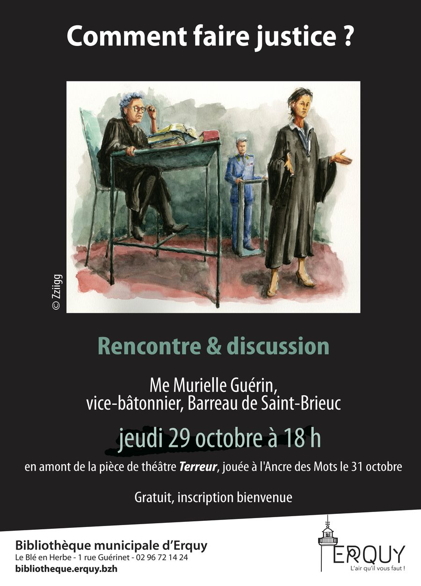

Accueil / Prochain spectacle
Terreur — procès fiction
Samedi 31 octobre 2026 · 20h30 · L'Ancre des Mots, Erquy

Les spectateurs sont les jurés
Le 26 septembre 2024, Laura Koch, pilote de chasse de l'armée allemande, abat un avion de ligne détourné par un terroriste, qui menaçait de l'écraser sur un stade où 70 000 personnes assistent à un match international. Elle choisit de désobéir à sa hiérarchie et tire.
Avait-elle le droit de sacrifier la vie des 164 occupants de l'avion pour sauver les 70 000 spectateurs du stade ?
La scène devient une salle d'audience : vous entendrez les témoins, la partie civile, la défense et l'avocat général, puis vous voterez en votre âme et conscience. Faut-il condamner ou acquitter Laura Koch ? Un évènement théâtral singulier, joué dans le monde entier.
Distribution & texte
- Texte : Ferdinand von Schirach, traduction de Michel Deutsch, éditions L'Arche (éditeur et agence théâtrale)
- Compagnie : Hercub
- Avec : Michel Burstin, Frédéric Jeannot, Céline Martin-Sisteron, Bruno Rochette, Sylvie Rolland, Johanne Thibaut et Laëtitia Leroy
- Mise en scène : M. Burstin, B. Rochette, S. Rolland
- Durée : À compléter
Tarifs & réservation
- Office de tourisme d'Erquy : 02 57 25 22 22
- En ligne : HelloAsso
- Sur place le soir même, dans la limite des places disponibles
Tarif réduit
Pour bénéficier du tarif réduit de 17 € et de 22 € par et selon le spectacle, il faut en choisir 3 en dehors de celui du Festival du Théâtre des Amateurs.
Verre de l'amitié
Pour rappel, après chaque spectacle, nous partageons le verre de l'amitié, sauf pour les spectacles du Festival du Théâtre des Amateurs.
Informations pratiques
- Lieu : salle de l'Ancre des Mots, Square de la mairie, 22430 Erquy
- Horaire : samedi 31 octobre 2026, 20h30 — ouverture du hall une demi-heure avant
- Placement libre
Ce qu'en dit la presse
« Une réflexion passionnante sur les démocraties face au terrorisme »Le Figaro
« Une véritable expérience sociologique »La Provence
« Le jeu des 7 comédiens est à la juste mesure de l'émotion »L'Humanité

« Comment faire justice ? »
Rencontre et discussion avec Me Murielle Guérin, vice-bâtonnier du Barreau de Saint-Brieuc, jeudi 29 octobre à 18h, en amont de la pièce Terreur.
Bibliothèque municipale d'Erquy, Le Blé en Herbe, 1 rue Guérinet. Gratuit, inscription bienvenue.
Teaser
À compléterLien vidéo (teaser de Terreur) : aucune vidéo trouvée à ce jour. Un lien YouTube pourra être intégré ici.